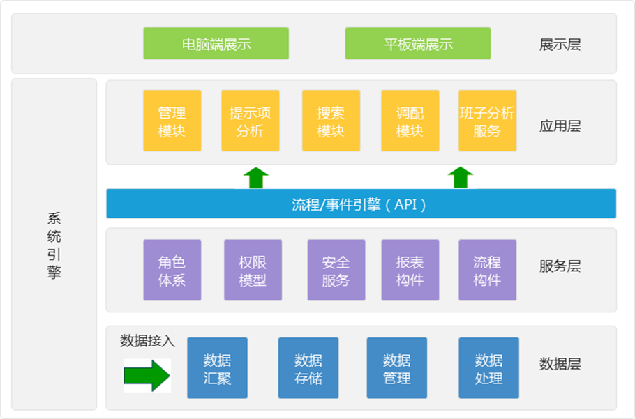
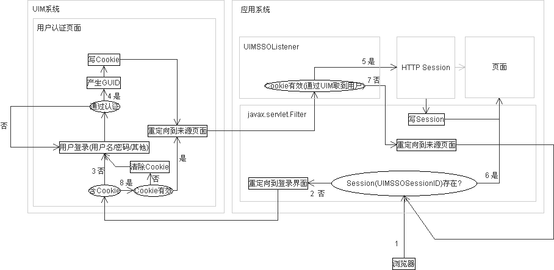
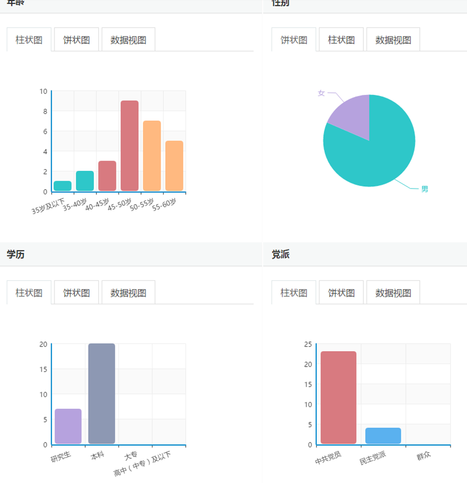
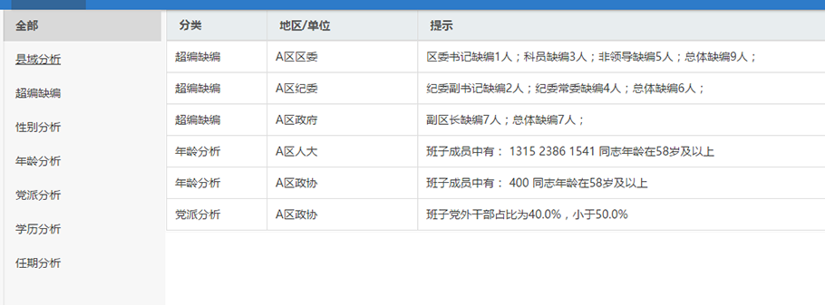

您当前的位置：首页 > 数据应用 > 人事调配系统解决方案
 降低开发门槛，缩短开发周期
提供JSON、XML、JSONP等数据返回格式
降低开发门槛，缩短开发周期
提供JSON、XML、JSONP等数据返回格式 找不到您需要的数据？
个性化私人数据定制服务
找不到您需要的数据？
个性化私人数据定制服务 降低开发成本，带来稳定收益
24小时不间断、数据优化、更新及维护
降低开发成本，带来稳定收益
24小时不间断、数据优化、更新及维护根据前期实地调研结果，结合组织在人事调配上遇到的各项调配问题，改进组织人事调配在资料存储、数据共享、调配操作便捷性、领导班子成员构成可视化，以及直观反映以《领导班子量化指标》为依据的该领导班子所存在的问题，并提供系统使用在数据部署上的技术支持。
以“安全性、实用性、可行性”理念为指导。保障系统安全为第一要义，使组织人事信息资源在安全范围内使用，在适当范围内实现数据的共享，提高部门办公效率；以实际需求的调研结果为出发点，切实解决组织在调配工作中遇到的各种问题，结合数据技术，直观呈现工作任务，简化人员调配步骤。

1.建立（逻辑）统一的信息资源目录，实现一站式全文检索。
2.提供各种维度的字段搜索。
3.提供用户自定义的搜索。
4.提供搜索结果统计。
5.提供用户预调配，即调配结果可回滚。
6.针对不同的调配方案返回不同的分析结果。
7.提供方便简洁的后台管理系统。
系统门户授权对象可以是用户或用户组，支持CA/PKI。可以管理授权用户对后台应用程序的访问。
1.分级的用户数据管理
2.用户认证
3.单点登录
单点登录的流程如下：

1.索引机制优化
2.全文检索
3.精确查询
4.多维度表分类检索
1. 班子结构分析
从年龄、性别、学历、党派等维度，对各个班子的人员结构进行统计分析，方便领导调配决策。

图 1班子结构分析功能截图
2. 班子提示项分析
根据给定的模型，分析出班子调配前的班子问题，包括县域分析，职数分析、性别分析、年龄分析、党派分析、学历分析和任期分析等等。

图 12.提示项功能截图
3. 人员相关互联网数据倾向性分析
通过采集系统采集的互联网数据，包括微博、论坛等等相关对人员评价的数据，利用倾向性分析技术给个人算出一个感情值，分析其网络评价。
4. 职位人员推荐分析
根据政府各部门提供的人员相关数据，如专业技能、工作经历等数据，分析其最佳匹配职位列表，也可根据相关职位分析推荐其最佳人员列表，并将相关推荐分析结果展示到前台为领导人事调配提供建议。
通过压力测试软件，对平台应用进行性能测试，系统的性能要达到以下的指标要求。
1.数据服务总线压力测试
用户数 |
并发数 |
处理时间(s) |
正确率 |
160 |
2500 |
<0.25 |
100% |
500 |
2500 |
<0.27 |
100% |
1000 |
2500 |
<1.5 |
90% |
2000 |
2500 |
<5 |
70% |
2.数据处理并发测试
前置条件 |
以下操作分别进行，分别连续测试2小时、4小时 |
||
测试功能点 |
输入（并发数） |
用户通过率 |
期望性能（平均值） |
搜索 |
10000 |
100% |
10000 |
分析 |
10000 |
100% |
10000 |
3.数据处理稳定性测试
前置条件 |
以下动作为同时进行，持续运行8小时。 |
|
测试功能点 |
输入/动作（次） |
正确处理率 |
搜索 |
30 |
99.9% |
分析 |
30 |
99.9% |
4.响应速度测试
1)查询类性能指标
前置条件 |
以下操作分别进行，连续进行2小时。 |
|
测试功能点 |
操作类型 |
期望性能（平均值） |
搜索 |
并发<1000 |
<5秒 |
搜索 |
并发<2000 |
<10秒 |
2)分析类性能指标
前置条件 |
在给定数据量大小的情况下，针对特定的应用分析 |
|
测试功能点 |
操作类型 |
期望性能（平均值） |
单次分析 |
10万条数据 |
<3 分钟 |
单次分析 |
100万条数据 |
<10 分钟 |
单次分析 |
1000万条数据 |
<15 分钟 |
单次分析 |
1亿条数据 |
<60分钟 |
1.多数据源类型
关键指标 |
参数 |
支持的数据源 |
结构化数据：oracle，mysql，sqlserver |
2.集群动态扩展
关键指标 |
参数 |
支持集群动态扩展 |
从10个节点到1000个节点 |
3.监控管理
关键指标 |
参数 |
监控管理 |
最大可以监控管理10000个节点集群（包括cpu，内存，IO，网络等） |
降低开发门槛，缩短开发周期
提供JSON、XML、JSONP等数据返回格式
找不到您需要的数据？
个性化私人数据定制服务
降低开发成本，带来稳定收益
24小时不间断、数据优化、更新及维护